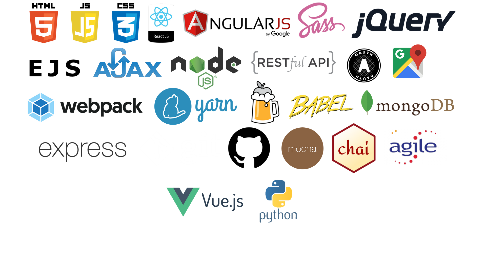

All my life I've enjoyed problem-solving, creativity and culture, so it's not a surprise that as soon as I tried the Python course on Codecademy in late 2017, I became an addict. I loved the way all the pieces tied together, from learning a language and what it's capable of to thinking about different solutions to a problem, building something that works and then making it better. Even if I wasn't planning on working as a web developer, I'd still fill up a lot of my spare time with coding and tinkering on projects.
I soon completed the Python and Full Stack courses on Codecademy and was hungry for more. I'd found Codecademy useful for learning the basics, but wanted more structured, intensive learning - the idea being to cram in as much as possible in a short space of time to see if I was able to take on a career in coding.
That's why I enrolled at General Assembly on the Web Development Immersive. It had everything I wanted in terms of the skills it taught and what was expected of me with regard to the amount and quality of work, and I really feel like I thrived on the course. I was constantly challenged in terms of having to learn new things, while also exercising all my creative and problem-solving skills to produce work that I'm proud of (see my portfolio for more info about my projects). It instilled in me a constant sense of energy and commitment to learning that I’m excited to take into my future career.
What I enjoyed most from doing the course was, perhaps unsurprisingly, vanilla Javascript. I enjoy the challenge of building an entire app from the ground up and everything that comes with that, from concept to design to UI to testing and all the bits in between, but what I really love the most is getting stuck into the code and finding new tools and techniques for doing what I want to do. I can get lost for hours playing with arrays and objects, rendering data or just completing a challenge on Exercism. That's why, out of all the technologies we used on the course, the one I enjoyed the most was React - because, after working with AngularJS (which I liked) and EJS (which I did not), it felt like getting back to basics, which suited me perfectly.
In terms of career, my ideal position is to be part of a small, dynamic, socially conscious team working on a variety of hard problems that need solving - I like to be constantly taking on new challenges, learning new skills and using them to be creative and productive. At the moment, I don't have a strong preference for back-end or front-end as I think I have strengths and weaknesses in both, and I'm keen to learn more before potentially specialising further down the line. My main priority over the next year is to learn as much as possible from the people around me, while also doing work that I care about and having fun. Ultimately, this is as a new way of life for me – one that I'm incredibly excited about.

*some more than others
Long before I'd ever thought about a life of coding, I was studying philosophy at the University of Edinburgh. Philosophy was a brilliant degree for me. It taught me a huge amount in a wide range of topics, from procedural logic to the faculties of human language to aesthetics, political systems and morality. Although there’s not much of a direct link in terms of hard skills between philosophy and coding (apart from logic), I’ve found that the soft skills of analysis, intellectual curiosity and an ability to express thoughts in a concise and meaningful way that I learnt while doing philosophy have been invaluable in coding. Then there are topics such as language processing, consciousness and reasoning that are more relevant to the tech world now than ever.
But what I really enjoyed doing at university was being part of Bedlam Theatre, the student theatre group. There I spent many hours acting, writing and directing plays with a close group of friends. It was an amazing chance to produce creative work with friends, and spend many years at the Edinburgh Fringe in August, when the city really comes alive.
Thanks to Bedlam Theatre, I went to the National Student Drama Festival (NSDF), and there I discovered the joys of arts journalism through Noises Off. Noises Off is a magazine published daily at NSDF, full of reviews, comment pieces, jokes and anything else the students at the festival want to put in it. Creating a magazine from scratch every day with a small team was exactly the kind of challenge I love. It meant that I didn't get much sleep over the week, but the satisfaction was always worth it (as was winning the Sunday Times Harold Hobson Student Drama Critic Award – the most ridiculously long-winded award name in the world). Even after leaving university, I kept coming back for more, eventually becoming editor and having to find solutions to the problem of shifting away from print to digital publishing and keeping students engaged.
It was writing for Noises Off that made me want to be an arts journalist and fiction writer after leaving university. I was lucky enough to get an internship on the Arts Desk of the Financial Times where, among other things, I got to fulfil a fantasy by writing features on drone music gods Earth and Sunn O))), and design in video games. Unfortunately, I soon discovered that the realities of modern publishing made my hopes of living off writing features on obscure topics that interested me and about five other people unlikely to become reality. So I decided to carry on working in editorial, freelancing as a production editor for GQ Style and working as a sub-editor for Times Higher Education, while I committed fully to my much more sensible plan of writing a book.
It's not like I really believed that within a couple of years I'd be a successful writer, but it was something I felt passionate about, and I knew I'd regret it for the rest of my life if I didn't try. And writing my book, Sleep, taught me a huge amount about self-motivation, dedication to a project, not being scared of a blank page, planning – and also how isolating working alone can be, and how much, ultimately, I enjoy being part of a team and collaborating with other people.
I really enjoyed writing Sleep, and I'm glad I did it, but just as I was finishing it, I realised that what I was really looking for was a career where I could use all the creativity, imagination and problem-solving skills that I enjoyed most in the work I'd done so far, and be part of an industry that was growing rather than shrinking, where there would be opportunities to be creating the future rather than playing catch up.
Before I knew it, I'd tried (at the suggestion of my partner) some coding on Codeacademy and knew that this was the life for me.
As much as I like to relax, I go slightly crazy if I stay still for too long, which is why I like to fill my life with plenty of hobbies and distractions.
BOOKS My first love is reading. I’ll devour any kind of book, but have a particular weakness for postmodern American writers such as David Foster Wallace and Thomas Pynchon. I like to shake up my reading habits - last year I only read books by writers who weren’t white, Western, straight men, along with the first three Harry Potter books in French. This year I’m working my way through the Russian classics (in English!). Discworld novels are my equivalent of comfort food. If I'm not reading fiction, then I like to keep up with current affairs thanks to my LRB subscription, along with Private Eye, the FT and the Guardian - all so I can read about history, art, politics, tech, the future, sport and other places and find out a little bit more about what's going on outside of my own little world.
MUSIC I also have a crippling addiction to vinyl records and add to my collection every month. My aim is to create the most eclectic mix possible, ranging from Robert Johnson to Aphex Twin to Led Zeppelin to Wu Tang Clan and everything in between. I can talk about the wonders of drone music for far too long. I also like to hoard songs online and I'm constantly adding to my Collectibles playlist on Spotify, which, I think, contains music from every single modern genre. (With a possible exception for nu-metal - I overdid it slightly as a teenager.) I try to get to gigs as often as I can - living in London I feel particularly lucky at the variety of bands I get to see. Recently I've enjoyed the jazz of Kamasi Washington and the face-smashing beats of Run the Jewels.
GAMINGA big part of why I enjoy coding, I believe, can be traced back to my love for video games. My first console was the Sega Mega Drive I got when I was 6 – it was the start of a beautiful relationship. I enjoy video games for the same kind of reasons I enjoy coding – the satisfaction of problem-solving and the reward you get from committing to learning a skill. In terms of genres, I'm an absolute sucker for 2D platformers, whether puzzle-platformers such as Braid, indie creepers like Inside, or punishing precision bastards like Celeste and Super Meat Boy. But really I enjoy anything that's going to challenge me and be an enjoyable experience, from the cathartic desert trip of Journey to the fantasy lands of the Witcher, the post-apocalyptic realities of the Last of Us and the rip 'n' tear of DOOM.
PUBSCall me a traditionalist, but I'm a big believer in pubs as social hubs. The first job I got after finishing school was working behind the bar at my local, and it's something I did throughout university and when I first lived in London. I love going meeting people in pubs, sitting with a book, having a good meal or just enjoying a decent beer. In Edinburgh, I worked at Cloisters Bar, where I developed a passion for craft beer and whisky (Lagavulin 16 is absolutely my favourite scotch - Ron Swanson and I agree on that). My favourite pub in London is the Southampton Arms, which is effectively a holy site for lovers of decent boozers and beer. It's not just about the alcohol though! I also enjoy a good pub quiz and regularly tour around North London pubs with a bunch of friends, answering questions and getting frustrated with how little we know.
SPORTSitting around playing video games, listening to music, reading and drinking beer is, apparently, not the healthiest of lifestyles, so I also try to keep physically active. I run every week and enjoy long cycle rides. In 2014, my partner and I did a sponsored ride from London to Amsterdam in three days, and after graduating from university, I ran my first marathon without any proper training - which was a huge mistake. Watching sport also brings me lots of pleasure - last year I was a season-ticket holder for Saracens Rugby Club and I follow rugby closely, but really any time international sport is on the TV, I'm happy to sit there and pretend like I have an opinion on what's going on.
POKERThere was a brief moment a few years ago when I dreamt about becoming a professional poker player. Then I realised two things: it's a full-time job fraught with risk and, more importantly, I wasn't good enough. Still, I love sitting down at a poker table with some friends and playing some Texas Hold 'Em. It's a great combination of skill, competition and luck and I try to play at least once a month. The only problem is it doesn't matter how early you start, heads up will always go until at least 3am...